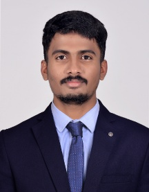

–
Senior MEP Engineer
Cemindia Projects Limited · India
Coordinated site activities and tracked progress for an MEP work package. Supported project planning, equipment management, and technical reporting.
Open to internships · Siegen, Germany
Mechatronics master’s student with hands-on experience in infrastructure projects and sensor-based prototyping.

01 / Profile
I’m pursuing an M.Sc. in Mechatronics at the University of Siegen after working on mechanical, electrical and plumbing systems for infrastructure projects in India.
I’ve worked with installation teams, coordinated inspections, and used drawings and progress data to support decisions on site. In my academic projects, I’ve explored how mechanical design, sensors, and embedded code work together. I’m looking to build on that experience in an internship involving industrial controls, AI automation, or robotics.
02 / Applied engineering
01 / Embedded control
My bachelor’s thesis focused on designing and fabricating a portable air purifier. At AiRTH, I worked in a four-person team on prototyping and validation, used CFD to investigate airflow, and developed an Arduino sensor control loop in embedded C/C++.
02 / Robotics
Built an all-terrain rover prototype as a mechanical engineering diploma project, exploring mobility on uneven surfaces.
03 / Mechanical design
Studied a mechanical indexing drive that converts continuous rotation into intermittent motion as part of my bachelor’s coursework.
03 / Industry experience
–
Cemindia Projects Limited · India
Coordinated site activities and tracked progress for an MEP work package. Supported project planning, equipment management, and technical reporting.
–
Larsen & Toubro Construction · India
Supported HVAC and piping installation and inspections on the Varsha Inner Harbour project. Reviewed construction drawings, supported quantity take-offs, and tracked progress and equipment in Excel and Power BI. Used ZWCAD to support temporary works for the Mumbai–Ahmedabad High-Speed Rail project.
04 / Toolkit
Arduino, embedded C/C++, Python, MATLAB/Simulink, ROS/RViz
AutoCAD, ZWCAD, Fusion 360, SolidWorks, ANSYS CFD
Drawing review, quantity take-offs, installation inspections, Excel, Power BI
05 / Academic background
Oct 2026 – Present
University of Siegen · Germany
Jul 2019 – May 2022
Vignan’s Institute of Information Technology · India
Jun 2016 – Jul 2019
Chaitanya Engineering College · India
Professional development
Basic to Advanced Microsoft Power BI and Basic to Advanced MS Excel · Skill Nation
Languages: German (B1), English, Hindi, Telugu (native)
06 / Contact
Open to internship opportunities in AI automation, PLC programming, and robotics.